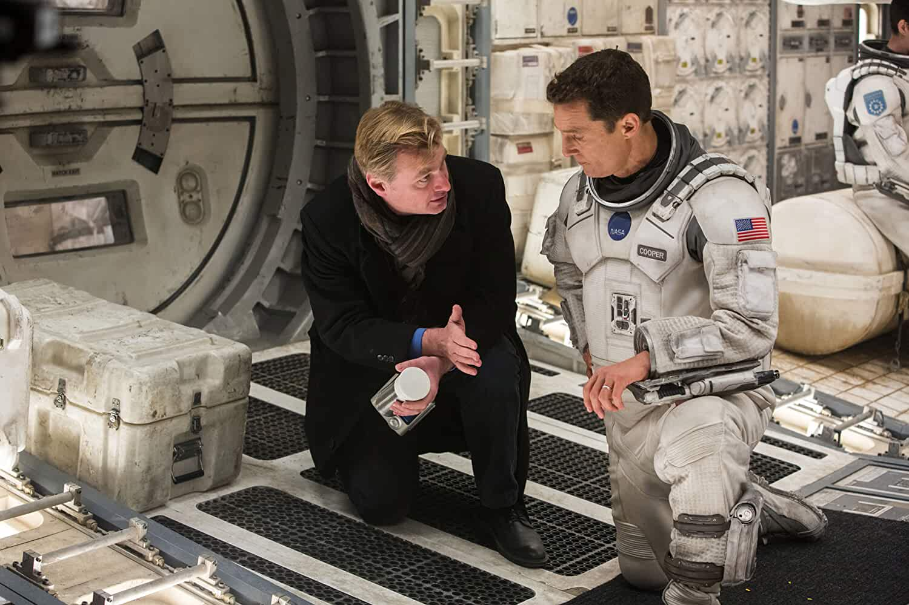

A team of explorers travel through a wormhole in space in an attempt to ensure humanity's survival.
Director: Christopher Nolan
Writers: Jonathan Nolan, Christopher Nolan
Stars: Matthew McConaughey, Anne Hathaway, Jessica Chastain
Photos

cast
Cast overview
Ellen Burstyn Ellen Burstyn ... Murph (Older)
Matthew McConaughey Matthew McConaughey ... Cooper
Mackenzie Foy Mackenzie Foy ... Murph (10 Yrs.)
John Lithgow John Lithgow ... Donald
Timothée Chalamet Timothée Chalamet ... Tom (15 Yrs.)
David Oyelowo David Oyelowo ... School Principal
Collette Wolfe Collette Wolfe ... Ms. Hanley
Francis X. McCarthy Francis X. McCarthy ... Boots (as Francis Xavier McCarthy)
Bill Irwin Bill Irwin ... TARS (voice)
Anne Hathaway Anne Hathaway ... Brand
Andrew Borba Andrew Borba ... Smith
Wes Bentley Wes Bentley ... Doyle
William Devane William Devane ... Williams
Michael Caine Michael Caine ... Professor Brand
David Gyasi David Gyasi ... Romilly
Storyline
Earth's future has been riddled by disasters, famines, and droughts. There is only one way to ensure mankind's survival: Interstellar travel. A newly discovered wormhole in the far reaches of our solar system allows a team of astronauts to go where no man has gone before, a planet that may have the right environment to sustain human life. Written by ahmetkozan
Details
Country: USA | UK | Canada
Language: English
Release Date: 7 November 2014 (USA)
Also Known As: Untitled Steven Spielberg Space Project
Filming Locations: Okotoks, Alberta, Canada